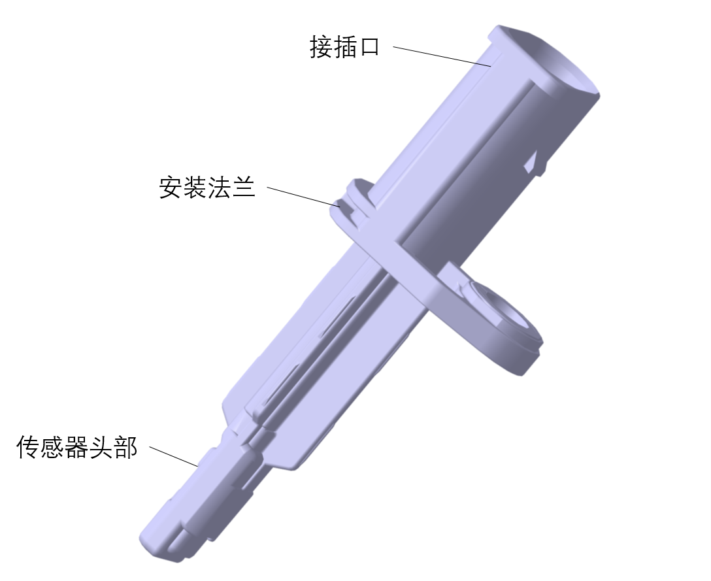
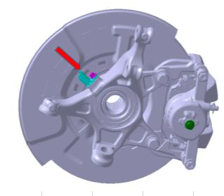
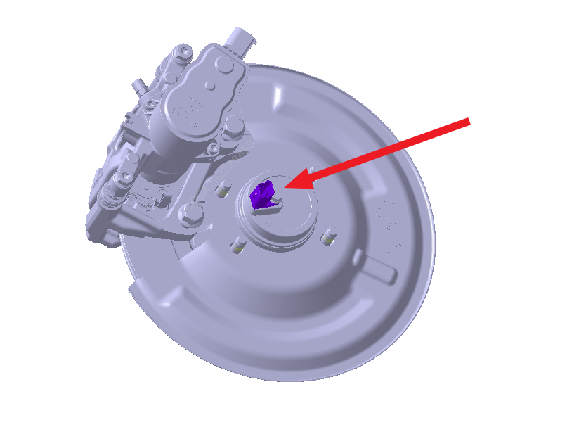
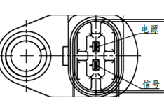
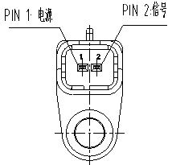

功能：主要用于汽车ABS(防抱死)系统及ESP（也称ESC,车身稳定控制）系统，用来测量汽车车轮的转速。
工作原理：利用某些金属或半导体的电阻值随外加磁场变化而变化的现象，这一现象就是磁阻效应，在施加一定工作电压的情况下，从而输出变化的电流信号。
产品结构：

前轮布置结构：

后轮布置结构：

接口定义1轮速传感器总成（用于后轮，零件号：3550050-MK02/MK03）：

接口定义2前轮传感器总成（用于前轮，零件号：3550030-MK02/MK03）：
